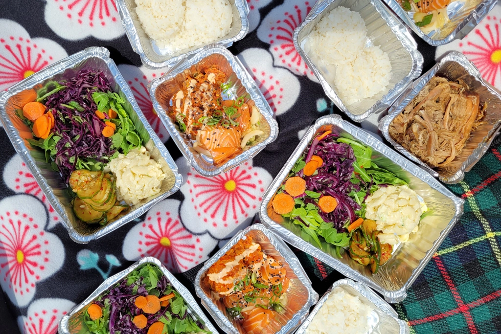
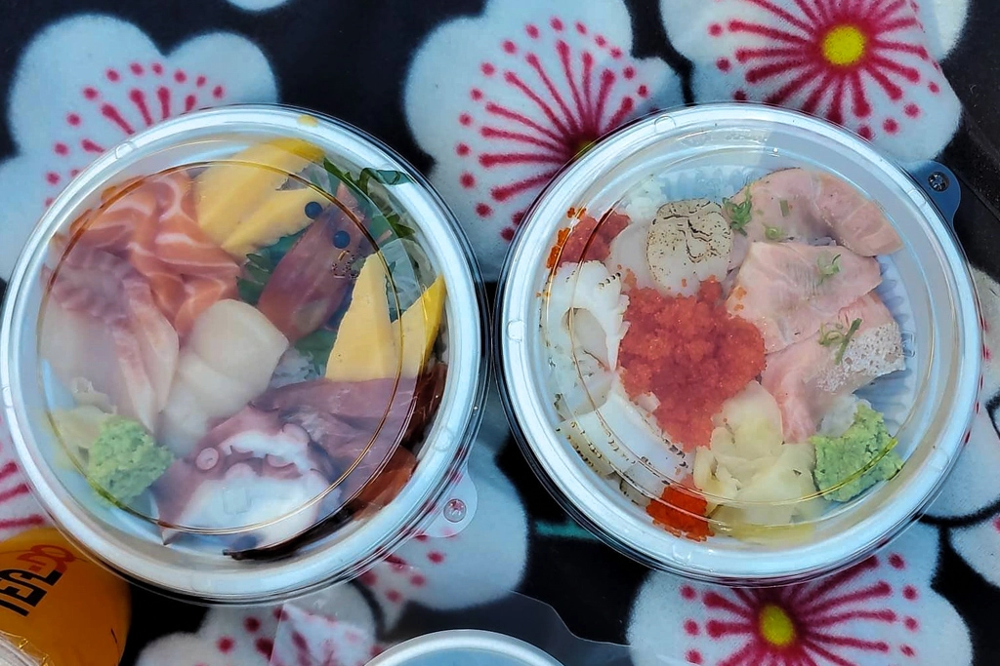
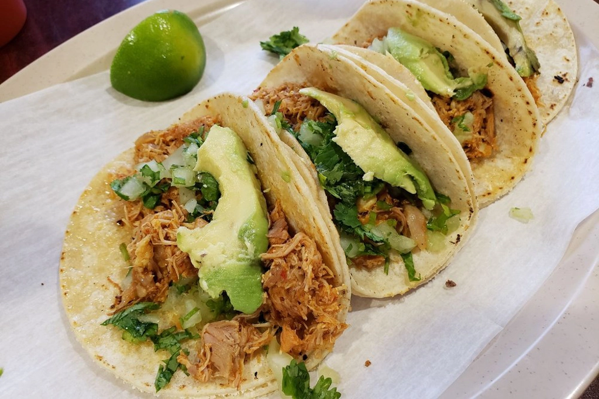
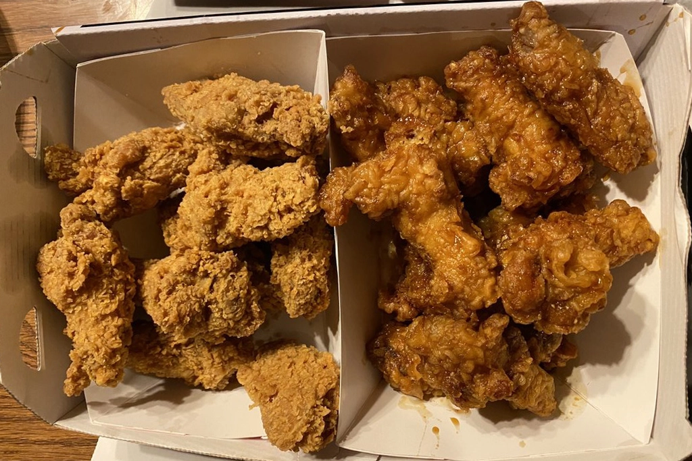
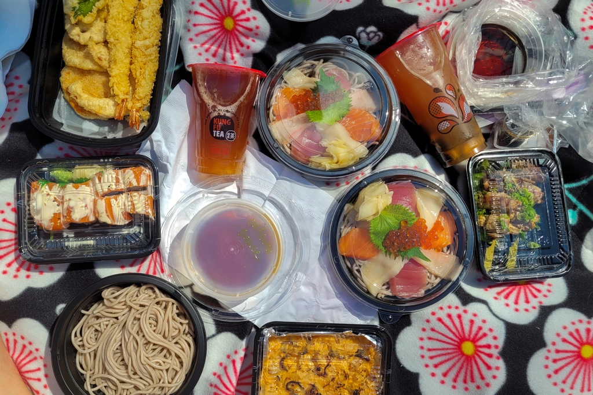
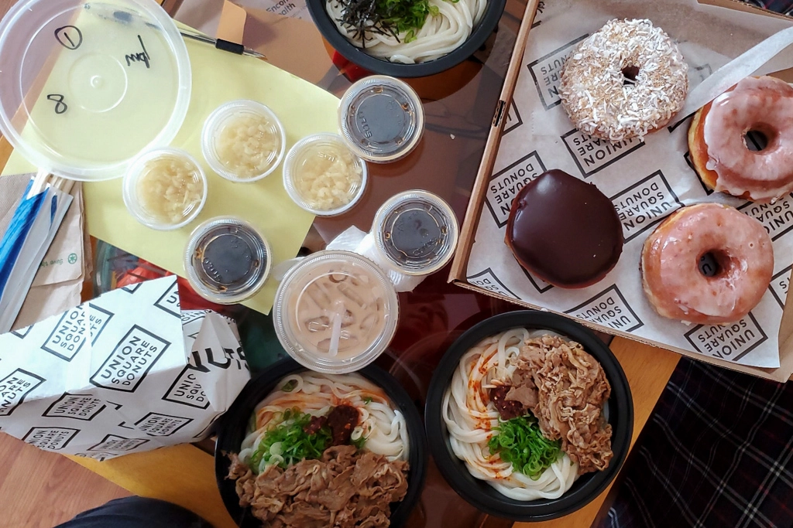

Best Boston Takeout Restaurants
May 16 - Written by Bonnie and Emily
Delivery and takeout spots have become our best friend this past year and we’ve compiled a list of our favorite places!
As the both of us have lived right outside of Boston prior to moving to NYC and have also spent the past year (for the most part) back in Massachusetts, we’ve gotten to try quite a few new food spots. Especially during this time and not being able to dine in at a restaurant, takeout and delivery have become our best friends. If you’re in the Boston area and are in need of new takeout/delivery spots, definitely give these places a try!
Manoa Poke Shop
300 Beacon St, Somerville, MA 02143
A hidden gem located in Somerville, Manoa has the best poke in the Boston area. Their menu is small but their quality is amazing which is why it’s kind of sad that they’re only open on the weekends. After getting takeout here once, we fell in love with how fresh the fish is and want to go back to try everything else. Their mix plates and poke bowls make the perfect lunch as it comes with a side salad and macaroni salad. We also tried their pineapple cake which was equally delicious. The cake was nice and soft and fluffy and as it is topped with a pineapple ring, it was full of pineapple flavor making it a sweet way to end your meal. Manoa is often quite busy during lunch time but that doesn’t stop them from having excellent customer service. If you’re craving some poke or want a taste of Hawaii, definitely give Manoa a try.
Tora Japanese Restaurant
20B Tyler St, Boston, MA 02111
In our opinion, one of our favorite Japanese restaurants in the city of Boston is Tora. Located in a small basement space in the heart of Chinatown is their cute and minimalistic restaurant that's perfect for date night. But most of all, because their dishes can be served hot or cold, this is one of the best restaurants to grab take out from or even delivery. With some of the freshest raw fish, their rice bowls are one of our favorite dishes to order. Since their dons (rice bowls) are one of the most popular types of dish, there are a ton of different varieties and choices to choose from. Some of our favorite rice bowls to order include the Sake Aisuru Don, a full on salmon rice bowl topped with salmon belly, minced salmon, and salmon sashimi, as well as the Nishiki Don, filled with a variety of raw fish including tuna, salmon, sweet shrimp, octopus, and tamago. Most of all, with the extra delivery fees from our well beloved delivery apps, Tora is also one of the best reasonably priced sashimi restaurants in the city! Definitely make sure to check out Tora in person or at home and pick out a rice bowl from their large menu!
Taqueria El Amigo
196 Willow St, Waltham, MA 02453
As two people who miss Los Tacos No. 1 in NYC, Taqueria El Amigo definitely hits the spot and at a fraction of the price! Located pretty far outside of Boston, this small family run restaurant is as authentic as one can get. Our favorite is their Carnita Tacos though the Al Pastor was quite good as well. Though we have only gotten their tacos, we assume the rest of their menu is equally as good. Emily was quite tempted to also try one of their quesadillas but decided against it so she will definitely be going back for one of those. They also have a pretty bomb Horchata if you’re in search of something to go with your meal. If you’re in need of a budget friendly meal, give this place a try!
BBQ Chicken
182 Harvard Ave, Boston, MA 02134
If you’ve watched the popular Korean drama Goblin or checked out our “Our Favorite Korean Restaurants in NYC'' post, I’m sure you’re familiar with our favorite Korean fried chicken place BBQ Olive Chicken. Although we may not have the exact same BBQ Olive Chicken in Boston, BBQ Chicken is a pretty close second. With a very similar fried chicken menu, we found comfort in reminiscing in our favorite NYC fried chicken flavors at BBQ Chicken in Boston. We know, this is supposed to be about takeout restaurants and fried foods tend to end up soggy by the time the delivery person leaves it at your door. However, BBQ Chicken takeout may be the one exception. Each time we order takeout from BBQ Chicken, their fried chicken arrives crispy, warm and delicious as if it just came straight out of the kitchen at the restaurant. This may possibly have to do with the geniusly designed takeout boxes that make sure to keep their chicken in the best state possible. Some of our favorite flavors include their Honey Garlic and Cheesling Wings. Apart from their chicken they also have a few other sides including their bulgogi poutine, marinated beef, eggs, and kimchi all topped on some delicious tater tots. If you’re looking for some delicious fried food to satisfy your late night cravings, BBQ Chicken is the place for you! Don’t forget to make sure they pack some radish and fries with your chicken!
Sugidama Soba & Izakaya
260 Elm St #106, Somerville, MA 02144
Sugidama Soba & Izakaya was a restaurant that we had stumbled upon while out walking around Somerville. With the warmer weather these days and also our desire to satisfy our soba craving, we figured this would be a great restaurant for us to try, especially since they have gotten pretty high reviews on some popular apps! Since we ordered cold soba noodles, they were the perfect kind of take out dish that you don’t have to worry about on the way home or when getting it delivered. Since they had such a large menu mainly for different soba sets and izakaya items, we decided to try a handful of different dishes. Some of our favorite dishes we tried were the Scallop Hokkaiyaki, Beef- Enoki Yakitori, and Salmon & Spicy Scallop Roll. Their yakitoris and appetizers were so delicious and are definitely must order items that would pair well with a glass of cold beer too! We also ordered their tempura soba set and sashimi soba set. Their tempura and sashimi were delicious and still fresh when they arrived and were great side dishes to the soba. Although their cold soba was pretty good, we couldn’t deny that Soba-ya in New York may just be an irreplaceable soba restaurant in our hearts. If you do come to Sugidama Soba & Izakaya, definitely make sure to order their yakitori and appetizers. With their large menu that's full of a variety of items, there are tons of delicious options for you to try. What's best is that it’ll still taste delicious even after being delivered!
Yume Ga Arukara
1815 Massachusetts Ave, Cambridge, MA 02140
Yume Ga Arukara is a one of a kind udon place for many reasons. First one being they only have 4 items on their menu and the second being this is one of the only places that we know of that serves cold udon. This restaurant is small but they’re mighty as they always have a long line of customers waiting for a seat. Our favorite item on their menu is their spicy cold udon as the spice adds the perfect extra touch of flavor to the noodles. These noodles are topped with beef that's the perfect amount of sweetness to balance the spice. If you aren’t a fan of spicy noodles, their classic cold udon is equally as delicious. What we like most about this restaurant is that the food is simple but that is what makes it special. They package their soup and noodles separately so you don’t have to worry about soggy noodles by the time your food gets to you. If you’re an udon fan and haven't tried cold udon yet, this is your chance, we promise you won't regret it!
*If you’re picking up some udon and are craving some delicious donuts, Union Square Donuts is just a short drive from Yume Ga Arukara.